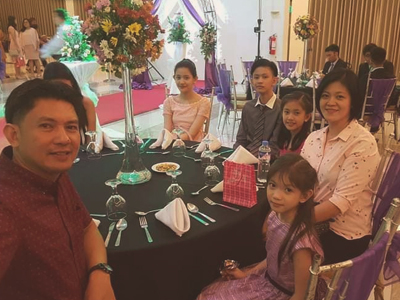
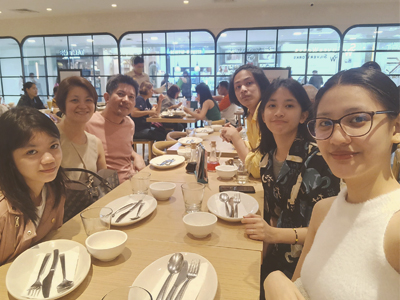
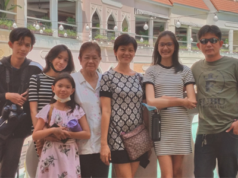
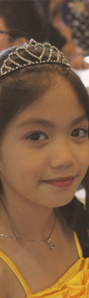
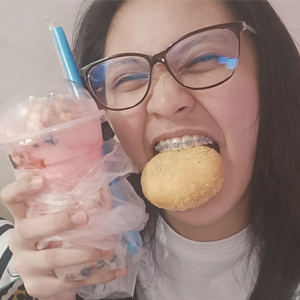
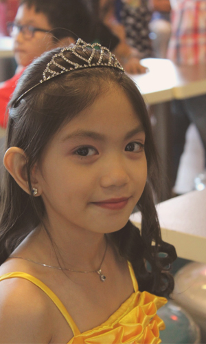

|
LE BERCEAU
L'ensemble où tout prend forme A family is where everything starts. It is the foundation of everything societal and communal. Without it, the world exists in chaos, disorder, and self. |
||
|
Lien
A family without any bond is but parasites. Connecting with your family makes us understand each other from all perspectives, which strengthens the bond towards one another. |
Amour
Love is the most powerful sentiment creating balance towards one another. A family filled with love understands the needs and wants of each member making all feel accepted and belonged. |
Intimatie
Intimacy acts as a door that once opened, feelings are fully released and understood. It is the way for the family to get to know each other in a more open discussion without feeling judged or prejudiced. |
A family is where everyone starts their life journey developing them to understand basic, complex, and ineffable concepts; may it be towards a certain discipline, societal function, or human feelings. It is the "berceau" or the craddle that supports every established knowledge known to man in order to satisfy one's needs.
Personally, giving meaning to a family is a hard job, not because I don't know how to properly and meaningfully describe, but because a family is not something that should be defined. Rather, family is something we need to experience. Being with my family makes me experience peace and tranquility making me feel protected and a part of a simple community. I can say that my family is not the most perfect and there are some irregularities, which are needed to be addressed; but it simply existing is sufficient enough to feel and understand what bond, love, and intimacy is. Seeing those people that you cherish and love the most apeases the heart and soul creating an ambience of emotions that you perceive unconciously. It is hard to describe such feeling but imagine your positive regrets; those memories you wish to relieve, they are similar to that type of emotion. Nostalgia can be a term.
Your lola simply giving you her food and making food for everyone is heartwarming enough even though sometimes, we don't appreciate it enough. Imagine your parents, especially your father, working hard and sacrificing themselves to simply fulfill your needs and wants. Realizing their hardworks simply make you feel regret about how you act towards them. Your siblings, despite fighting or teasing each other, are the some of the people to who you can tell your problems and ask advice. All this are part of a family; my family. Love is always seen as something that is perfect. Yet, perfection requires imperfection to be perfect. Therefore, a family who loves its members is a family who also hates one another. It is a little confusing since it is philosophical but it makes sense when profoundly reflected. Thus, in my family, the love is simply perfect.
|

A photo taken where we were with all of our family members celebrating the debut of our cousin having fun all night and cherishing the moments we all had. It was a great occassion since it was also my first time to be one of the 18 roses. |

The most recent photo we had as a family taken in December last year. We also celebrated the birthday of our dad in SM North Edsa where we ate, bond, and had fun together. |

It was 2022 when we went to BGC since my siblings and I wanted to go there and experience what it was. The place was vast and beautiful yet, expernsive and luxurious. However, the problem really was we went there in the middle of the day. |
|
Les Voilà
Meet my family |
|||||

|
 | ||||
|
|
Dominga Macabalitao
An amazing, self-less, courageous, and loving lola to ever have. She always prioritize us before herself by providing our needs even if she has barely anything to give. An incredible woman who still moves and works in her own phase despite being old and fragile. It is even impressive that most of her peers require support to do simple tasks while she, by herself, is able to do tiring work. I really love my lola even though I don't show it to her much. I appreciate all the gestures she does and cherish everything she gives; even though I sometimes refuse her good will. Frankly, she is a shy type that can't say what she wants but evidently shows it through her refusals and manners. She avoids going outside yet she envy doing so. This is because each time we go on a trip, she enjoys and amuse herself seeing how she still can move and appreciate the beauty around her. Overall, she is a self-less, strong woman who loves her sons and daughters. |
|
Lea Ayalin
A curious, religious, loving, strong, capable woman who does all. She may not have a job but she meticulously and continuously do every thing household related to ensure the nourishment in both physical, mental, emotional, and spiritual growth of everyone. Additionally, she is resilient and persistent never letting her problems pull her down and has a strong faith towards God making her feel at peace amidst chaos. No quantity can ever describe the amount of love and care that my mother provides. No matter how many times we are stubborn and rebelious, she always loves us and accepts us. Her will to nourish, educate, and raise us as an emotionally and mentally stable people filled with love, care, and understanding is unmatch. I simply wish that one day, I will have the courage to show her how I really am grateful and in debt to her pure and genuine love. |
|
|
|
Esteban Ayalin
A person with virility, tenacity, determination, inspiration, genuinity, and loyalty who never stops working in order for his family to strive and achieve their own goals in life. A provider exploring the world who simultaneously work with bare rest. The amoutn of sacrifices he has done is a realization that should be considered and appreciated more than what it is worth. I cannot describe my father more than a person who does all. A person that is strong in mind, physical, and emotions that never stops. I never imagined that his work is harder than my current dilemmas blinding me to only see mine as the worst. It is unimaginable that he barely sleeps sacrificing everything just to provide us with everything we need and want while here I am whining about school projects that I deem hard. His incredible, ardent resolve is a trait never ceasing to stop. |
|
Eiah Ayalin
A compassionate, understanding, persevering, friendly, and determined person who went her way to become a strong and knowledgeable woman. Additionally, she is a gamer who loves to communicate and socialize through games and communication apps where she also found her "love of her life".

In all honesty, she is a nice and compassionate sister that will give you advice and help you with your problems. One thing to share is that I regret hating her when we were kids, which I don't even know the reason of. She was once academically incompetent but seeing her now, she excells and knows how to manage her time. Still, there are times that her gaming addiction can be a problem but she always prioritize her academics so it neutralises. Moreover, even though when she is loud and annoying when playing, I appreciate having noise in my background while I do something making me feel well accompanied. |
|
|
|
Elia Ayalin
A social, fun, curious, and well-oriented in food and in fashion person trying to understand the world around her. Her ability to find interesting and new things; especially in cuisine, is astonishing and impressive as if she is introducing us to new perspectives and cultures that we barely or never knew before. She is also passionate learning new things and is currently intrigued with e-guitars. Personally, she is simply amazing that she knows a lot of things about foods and fashion, which is due to her manner being social and explorative. I can attest that she also is the one who helps me dress properly and attractively since I dress whatever. Moreover, she also recommends great places to relax and try new cuisine, which are most of the time delicious and savory. |
|
Esia Ayalin
A shy, jolly, curious, explorative, and spiritual person growing to become emotionally and spiritually competent. She is the happy pill of everyone at home due to the fact that her excessive joy and affection relieves the stress from school and work. She is currently following the steps of our mom being spiritual and faithful to God, which I find interesting and amusing for her innocent age. Furthermore, she may not be intelligent in academics but the way she handles it is impressive and I can see her in a bright and successful life. I personally adore and cherish our little sister since she is always joyful and playful being curious and asking many basic mundane things, which seems like a philosophical mind. Everytime I feel stressed, pressured, and tired; I always ask her for a hug to simply have a relief and relax for a moment. It is a nice way to regain energy to continue doing work. Moreover, she is my closest sister among the three since we have a lot in common but in different contexts. |

|